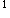

A.100ml
B.200ml
C.300ml
D.400ml
E.500ml
参考答案：D
A.1
B.2
C.3
D.4
E.5
参考答案：C
A.急性肾盂肾炎
B.急性前列腺炎
C.肾结核
D.膀胱肿瘤
E.肾肿瘤
参考答案：E
A.肾
B.输尿管
C.膀胱顶部
D.膀胱颈部
E.前尿道
A.压力性尿失禁
B.急迫性尿失禁
C.真性尿失禁
D.充溢性尿失禁
E.混合性尿失禁
A.尿液污染
B.确诊尿路感染
C.泌尿系结核
D.盆腔炎
E.前列腺炎
参考答案：B
A.前段尿
B.中段尿
C.后段尿
D.随机尿
E.夜尿
A.尿常规
B.尿培养
C.尿沉淀涂片染色检查
D.膀胱镜检查
E.尿脱落细胞学
A.脓尿
B.乳糜尿
C.晶体尿
D.血尿
E.蛋白尿
A.急性膀胱炎
B.膀胱结石
C.膀胱肿瘤
D.膀胱结核
E.前列腺肥大
A.血尿素氮
B.黄疸指数
C.中心静脉压
D.凝血酶原时间
E.3P试验
参考答案：A
A.尿路平片
B.静脉肾盂造影
C.磁共振尿路成像
D.B超
E.膀胱镜检查
A.卡那霉素
B.庆大霉素
C.磺胺类药
D.氯霉素
E.青霉素
A.膀胱镜检查
B.X线平片
C.静脉肾盂造影
E.肾动脉造影
A.给止痛药
B.给镇静、安定药
C.嘱少饮水，减少排尿
D.卧床休息
E.用抗生素
A.膀胱
C.肾脏
D.后尿道
E.膀胱以上尿路
A.尿多，以白天尿多为主
B.尿多，以夜尿多为主
C.尿量无变化
D.尿量减少
E.尿少，以夜尿少为主
A.KUB检查
B.IVP检查
C.RPG检查
D.DSA检查
E.CT检查
A.尿失禁
B.尿潴留
C.尿频
D.尿急
E.尿痛
A.术前做好解释工作
B.嘱患者多饮水
C.检查前清洗外阴
D.术后留置导尿管1周
E.应用抗生素，预防感染
A.50mg
B.100mg
C.150mg
D.200mg
E.250mg
A.密切观察患者血尿出现情况
B.嘱病人多饮水
C.必要时可用抗生素预防感染
D.必要可使用止痛药
E.有明显血尿应减少饮水量
A.常规肠道准备
B.准备泛影葡胺造影剂
C.做碘过敏试验
D.鼓励病人多饮水
E.禁食，排空小便
A.10以上
B.10以上
C.10以上
D.10以上
E.10以上
A.有否膀胱肿瘤早期表现
B.膀胱容量是否<50ml
C.有否合并心力衰竭
D.有否肾功能严重减退的表现
E.有否尿道内结石嵌顿的表现
A.镇静止痛
B.应用止血药
D.加强营养支持
E.应用抗生素
A.膀胱肿瘤
C.膀胱结核
D.前列腺增生
E.前列腺癌
A.功能性尿失禁：与膀胱过度充盈有关
B.功能性尿失禁：与腹压升高有关
C.反射性尿失禁：与膀胱收缩有关
D.完全性尿失禁：与神经传导功能减退有关
E.压迫性尿失禁：与膀胱括约肌功能减退有关
A.收集早餐前尿液
B.最好采取导尿法收集尿标本
C.膀胱镜检查后可收集尿标本
D.收集尿标本的容器应严格消毒
E.尿标本应及时送检
A.5000ml
B.3500ml
C.2500ml
D.2000ml
E.1500ml
A.遗尿
B.真性尿失禁
C.压力性尿失禁
D.急迫性尿失禁
E.充溢性尿失禁
A.输尿管越过腹主动脉处
B.输尿管中段
C.输尿管越过髂血管处
D.输尿管上1/3处
E.输尿管进入骨盆位置
A.真性尿失禁
C.尿瘘
D.充盈性尿失禁
E.多尿
A.晨起第一次尿
B.任何时间的尿均可
C.晨起第二次尿
D.收集24小时尿
E.收集12小时尿
A.急性肾小球肾炎
B.肾病综合征
C.急性肾盂肾炎
D.急性膀胱炎
E.急性间质性肾炎
A.晨间第一次尿倒去留第二次尿
B.第一次尿
C.第三次尿
D.任何时间导尿
E.以上都不对
A.排尿次数增多，量增多
B.排尿次数增多，每次尿量减少
C.排尿次数增多，量很少
D.排尿次数不增多，量很多
E.排尿次数增多，有尿痛
A.腹部X线平片
C.中段尿培养
D.尿找抗酸杆菌
E.肛门指诊前列腺检查
A.顺利插入导尿管后迅速引出残余尿液1500ml
B.留取初尿行洁尿培养
C.气囊内注入生理盐水5ml
D.记录尿量
E.告诉病人要少饮水，会阴部保持清洁
B.直肠指检
C.KUB +IVP
D.尿道造影
E.B超
A.肾小球滤过功能
B.肾脏的浓缩功能
C.肾小管的分泌功能
D.肾小管酸碱平衡功能
E.肾小管重吸收功能
A.第1杯有血，其余无血
B.第2杯有血，其余无血
C.第3杯有血，其余无血
D.第1杯明显有血，第3杯无血
E.第3杯明显有血，第1杯无血
A.前尿道
B.后尿道或膀胱基底部
C.肾
D.输尿管
E.肾盂
A.肾绞痛后出现血尿，先考虑上尿路结石
B.无痛性全程血尿，应注意肾脏肿瘤
C.进行性顽固性的膀胱刺激征，应考虑泌尿系结核
D.急性尿潴留伴有急迫尿意感，应考虑神经损伤病变
E.骑跨性损伤出现尿道口滴出鲜血，应考虑前尿道损伤
A.肿瘤
B.结石
C.结核
D.丝虫病
E.梗阻
B.尿沉渣检查
C.尿细菌学检查
D.尿液生化检查
E.尿细胞学检查
A.无菌性脓尿
B.无痛性肉眼血尿
C.疼痛后血尿
D.尿频终末血尿
E.血尿进行性加重
A.第1杯尿液异常
B.第2杯尿液异常
C.第3杯尿液异常
D.后2杯尿液异常
E.3杯尿液均异常
A.排尿困难
B.尿液异常
C.尿道分泌物
D.疼痛
E.肿块
参考答案：A B C D E
A.前列腺增生患者急性尿潴留时
B.收集尿培养标本
C.测定膀胱容量
D.急性尿道炎患者
E.膀胱内药物灌注
参考答案：A B C E
A.血尿
B.脓尿
C.结晶尿
D.乳糜尿
参考答案：B C D
D.逆行肾盂造影
E.肾B超
A.尿频
B.尿急
C.尿痛
D.尿失禁
E.尿潴留
参考答案：A B C
C.乳糜尿
D.晶体尿
E.少尿或无尿
D.排尿困难
A.腰椎DR
B.查血常规
C.查尿常规
D.查血白细胞
E.查肾功能
A.葡萄球菌
B.绿脓杆菌
C.军团菌
D.大肠杆菌
E.肺炎球菌
B.粪常规
C.血常规
D.尿培养
E.12小时尿
A.尿路结石
B.尿路结核
C.尿路感染
D.尿路损伤
E.尿路肿瘤
微信关注